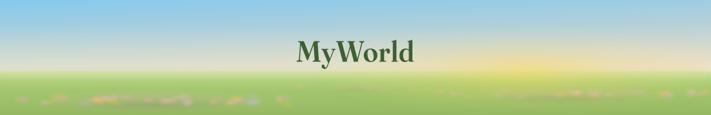

<img>로 불러 GitHub README와 같은 SVG 샌드박스 조건을 재현합니다. 왼쪽 = 라이트 모드(#ffffff) · 오른쪽 = 다크 모드(#0d1117). 아래 좁은 폭은 폰 렌더 확인용.

※ 세 안 모두 글자가 아직 path로 구워지지 않은 상태입니다. 이 PC에 Josefin Sans가 없으면 기본 산세리프로 대체되어 보입니다 — 선택 후 굽습니다.